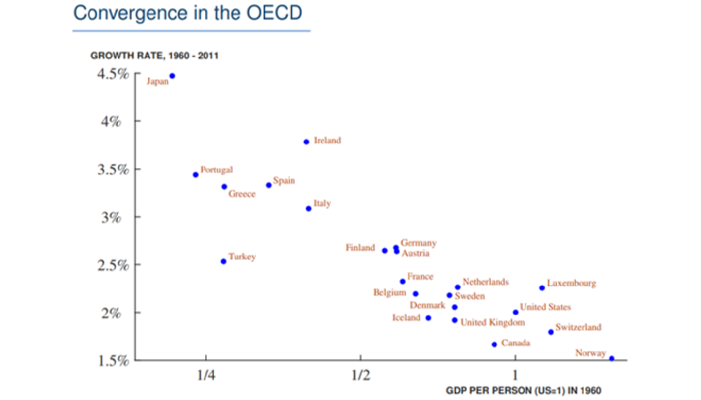
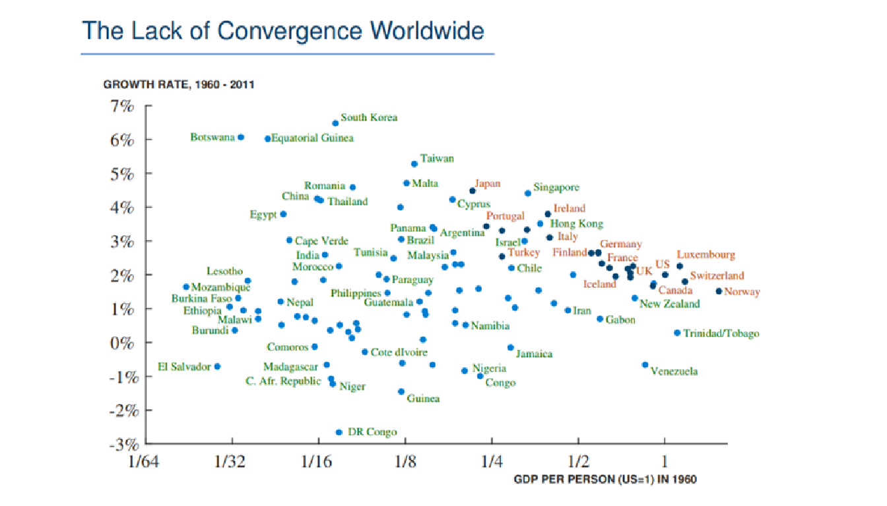
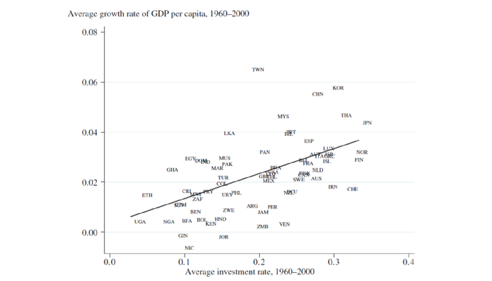
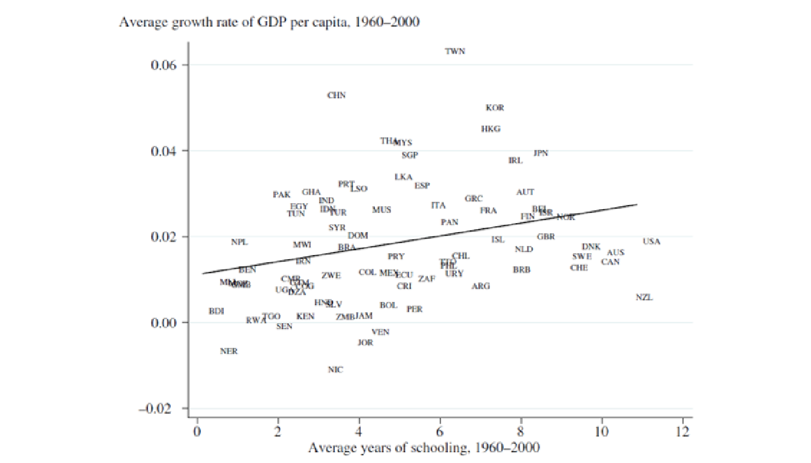
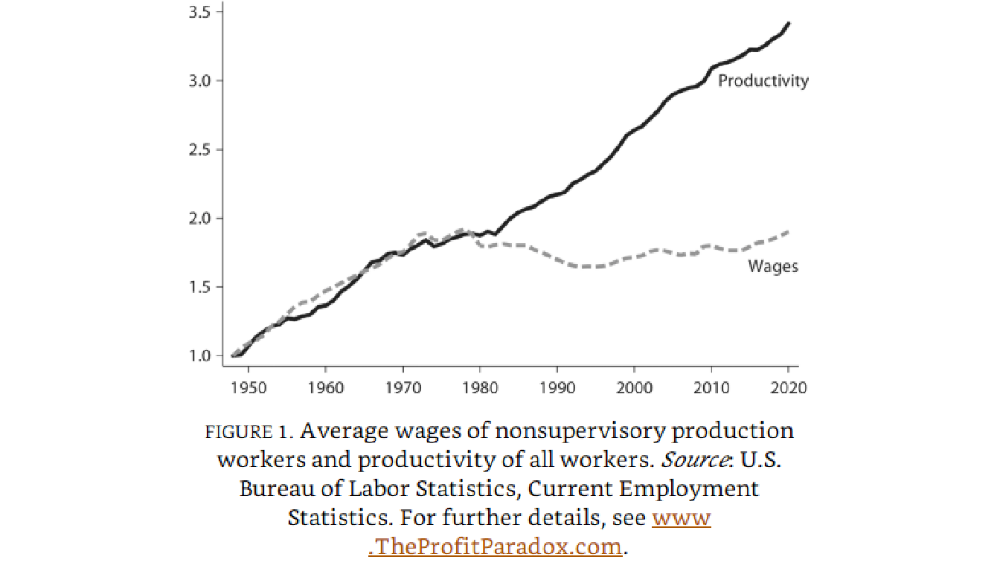
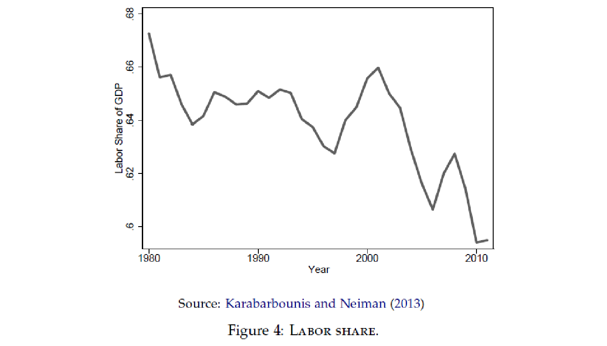
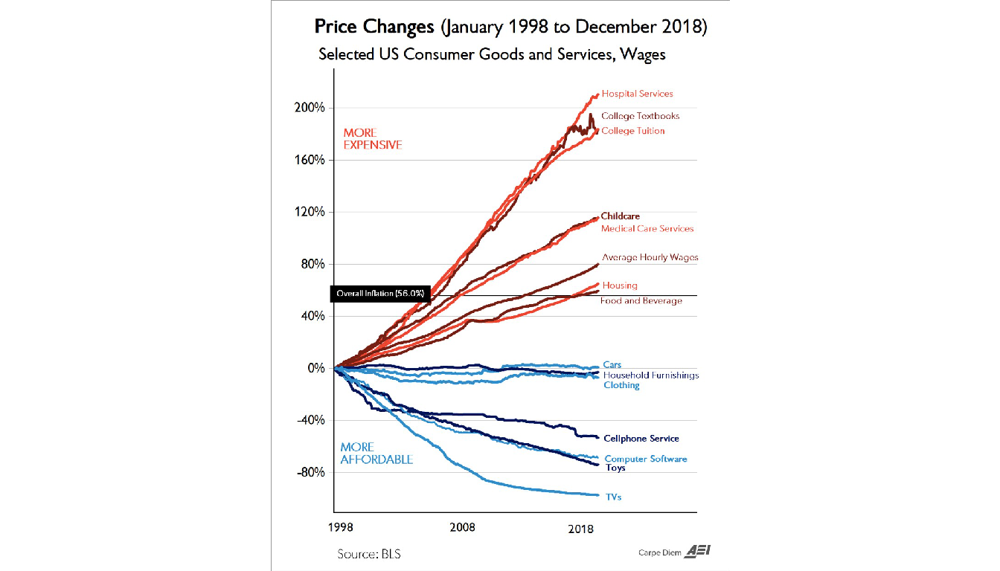

Crecimiento Económico
Introducción al curso
Crecimiento Económico
Agenda
Introducción al curso
- Objetivo del curso
- Temario
- Material
- Calificación
- Reglas
Introducción al crecimiento económico
- Medición del crecimiento económico
- Disparidades en el ingreso entre países
- Factores que potencialmente determinan el crecimiento económico
- Relación entre factores
Crecimiento Económico
| Tema | Descripción |
|---|---|
| Introducción a la teoría moderna del crecimiento económico |
Factores que propician el crecimiento económico (y el estancamiento del PIB) Patrones de convergencia Efecto de políticas en la tasa de crecimiento de largo plazo |
| Desarollo de los modelos de crecimiento |
Modelos de crecimiento exógeno Modelos de crecimiento endógeno * Supuestos y fundamentos * Optimización * Transiciones al estado estacionario |
| Teoría y análisis de datos |
Hechos estilizados del crecimiento Teoría neoclásica y moderna Pronósticos Tendencias Patrones de crecimiento |
| Tópicos de crecimiento económico | Factores específicos potencialmente relevantes para explicar el crecimiento económico de un país |
Primera parte del curso
La primera parte del curso trata de desarrollar los hechos del crecimiento económico y los principales modelos para comprender esos hechos.
Este marco se utilizará para analizar una serie de preguntas más específicas relacionadas con el crecimiento y su interacción con otras áreas de la economía:
¿Somos pobres, ricos, o estamos en camino a serlo?
¿Cuáles son los factores fundamentales del crecimiento económico?
¿Cuáles serán las tasas de crecimiento si los factores fundamentales tienen una evolución constante y predecible?
¿Qué tasas de crecimiento son alcanzables en el largo plazo?
¿Qué aplicaciones tiene el análisis? - ¿Cómo impulsar el crecimiento a largo plazo (en términos de los fundamentales)?
Primera parte del curso
¿Qué preguntas NO se contestarán?:
¿Qué tasas de crecimiento ocurrirán en el largo plazo? - En el largo plazo, el crecimiento económico es muy dificil (imposible) de pronosticar.
¿Cuáles serán las trayectorias de crecimiento en el corto plazo? - No se analiza la demanda en los modelos de crecimiento económico - Hay otros modelos (con otros objetivos) para esto.
¿Qué políticas específicas impulsan el crecimiento económico? - Dependen del contexto del país y es dificil aislar el efecto de políticas.
Preliminares matemáticos
Se adjunta en comunidad una Nota sobre algunas herramientas matemáticas necesarias para estudiar el crecimiento, incluyendo lo siguiente:
Niveles y tasas de crecimiento
Logaritmos y porcentajes
Logaritmos, diferencias de logaritmos y pendientes
Cálculo de tasas de crecimiento
Este material es sólo una referencia por si necesitan reforzar el álgebra y cálculo básico, o si no se sienten cómodos con el funcionamiento de los logaritmos y exponentes.
Medición del PIB
Como prerequisito del curso, es necesario saber como se mide el PIB real, el indicador clave de la actividad económica.
Hay muchos problemas no triviales con la medición del PIB, y en particular con la comparación del PIB en diferentes períodos de tiempo o en diferentes países, incluyendo:
Dos bienes y dos períodos de tiempo.
Muchos bienes
PIB real en el tiempo
PIB real entre países
PIB per cápita
Estándares de vida
Comparaciones con el pasado.
La Nota en CANVAS sobre medición del PIB da un repaso general sobre estos temas.
Medición del PIB
Medido mediante cambios en el PIB per cápita – medible y objetivo.
Es un buen proxi del nivel de actividad económica.
Limitaciones técnicas:
No necesariamente refleja incrementos en el nivel del estándar de vida (salarios pueden caer como proporción del PIB / crecimiento poblacional afecta al indicador).
El proceso de destrucción creativa y transformaciones estructurales crea tensiones sociales (generalmente crea ganadores y perdedores).
No mide toda la actividad económica.
Otras: difícil de medir y actualizar.
Teorema de imposibilidad de Arrow: Con al menos tres alternativas, ninguna regla de agregación puede producir siempre un orden social completo y transitivo y satisfacer a la vez dominio irrestricto, unanimidad de Pareto, independencia de alternativas irrelevantes y ausencia de dictador. El resultado concierne a la agregación de preferencias, no a la medición del PIB. Arrow, 1950.
Medición del PIB

Expectativa de vida
- Los países con mayor PIB por habitante tienden a mostrar una mayor esperanza de vida. El acceso a la atención médica y los efectos de la salud sobre la productividad son posibles canales que requieren evidencia adicional para establecer causalidad.
Mortalidad en menores de cinco años
- La figura compara el PIB por habitante con la probabilidad de morir antes de cumplir cinco años. Esta medida incluye a todos los menores de cinco y difiere de la mortalidad infantil, que se refiere a menores de un año.
Fecundidad
- Los países con mayor PIB por habitante tienden a mostrar menor fecundidad en esta comparación. El número de hijos por mujer difiere de la tasa de crecimiento poblacional, que depende también de la mortalidad y la migración. La figura no identifica por sí sola el mecanismo causal.
Población urbana
- Los países con mayor PIB por habitante tienden a mostrar una mayor proporción de población urbana. Esta asociación es compatible con transformaciones de la estructura económica, pero la figura no demuestra una causa única ni un efecto causal de la urbanización.
Exposición a PM2.5
- La figura relaciona la exposición media anual a partículas PM2.5, en microgramos por metro cúbico, con el PIB por habitante. Sustituye la antigua referencia de mortalidad por contaminación. La exposición es una medida ambiental distinta de las muertes atribuibles y esta comparación no demuestra una curva ambiental universal ni una relación causal.
Emisiones de dióxido de carbono
- Las emisiones de CO2 parecen aumentar con el PIB per cápita, en línea con un mayor uso de energía en los países más ricos. Por lo tanto, una de las preocupaciones que rodean el mayor PIB per cápita en es que generará aún más emisiones de CO2.
Pobreza extrema
- La figura compara el PIB por habitante y la proporción de población con menos de US$3 al día, a paridad de poder adquisitivo de 2021. Ese es el umbral de la edición descargada en noviembre de 2026 y difiere del umbral histórico de US$1.90. La relación entre países es descriptiva y depende también de la distribución del ingreso.
PIB por habitante: China, India y África subsahariana
Pobreza extrema: China, India y África subsahariana
Índice de hambre global
- El Índice Global del Hambre resume varios indicadores de desnutrición y salud infantil. Un valor menor indica menor gravedad en ese índice, no un conteo directo de personas con hambre. La comparación con el PIB por habitante es descriptiva.
Obesidad
- La figura muestra la prevalencia de obesidad entre adultos de la selección de países, según la definición y estandarización indicadas en los metadatos. No mide hambre ni permite por sí sola inferir una relación con el PIB.
Número de horas trabajadas
- La figura relaciona el PIB por habitante con las horas anuales promedio por persona ocupada. Una asociación entre países no demuestra que elevar el ingreso reduzca las horas trabajadas, y las horas por ocupado difieren de las horas por habitante.
“Hechos” del crecimiento
Los datos de las figuras locales corresponden a las ediciones identificadas en cada vista. Grupo 1: Australia, Canadá, Reino Unido, México y Estados Unidos. Grupo 2: China, Alemania, Japón, Corea del Sur, Nigeria y Estados Unidos. Son selecciones del código docente, no clasificaciones homogéneas por nivel de desarrollo. Las comparaciones son descriptivas. Fuentes y datos locales.
Este tema contiene una serie de cifras destinadas a establecer algunos de los hechos estilizados clave sobre el crecimiento económico.
Estilizado significa que estamos observando tendencias generales y que habrá excepciones por todas partes.
Cuando comencemos a construir modelos de cómo crece la economía, vamos a verificar que nuestros modelos tengan sentido preguntándoles si pueden replicar estos hechos estilizados clave.
Si no pueden, entonces probablemente hay algo mal con nuestro modelo.
Estos hechos estilizados son quizás el aspecto más importante del aprendizaje del crecimiento económico.
- Si no comprende lo que nos dicen los datos, entonces es irrelevante lo que su teoría favorita del crecimiento económico dice que debería ser cierta.
“Hechos” del crecimiento
Crecimiento estable
- Evolución del PIB per cápita del grupo 1: una pendiente logarítmica aproximadamente constante indica crecimiento sostenido, con fluctuaciones.
“Hechos” del crecimiento
Estabilidad del crecimiento en periodos prolongados
- La divergencia entre regiones se produjo al mismo tiempo que varios países en el mundo “despegaron” y lograron un crecimiento económico sostenido.
“Hechos” del crecimiento
Convergencia y divergencia
- Las brechas de ingreso dependen del nivel inicial y del crecimiento acumulado. Incluso diferencias pequeñas de crecimiento, sostenidas durante décadas, pueden ampliar o reducir considerablemente una brecha inicial.
“Hechos” del crecimiento
Convergencia y divergencia
- Convergencia: relacionar el ingreso inicial con el crecimiento posterior de la muestra, sin confundir una asociación con una ley universal.
Convergencia
- Tomando a los países pertenecientes a la OCDE nos arroja el siguiente resultado:

- En la muestra histórica de la figura, un mayor PIB por habitante inicial se asocia con menor crecimiento posterior. Esta evidencia de convergencia beta no basta para probar una reducción de la dispersión del ingreso ni un mecanismo causal.
Convergencia
- Los resultados muestran a todos los países distinguiendo a los de la OCDE:

Convergencia
Convergencia condicional e incondicional
La gráfica histórica de la muestra mundial no establece una convergencia incondicional general. La conclusión debe referirse a los países, años y medida de ingreso mostrados, y puede cambiar con la muestra o el periodo.
La convergencia condicional pregunta si una economía crece más rápido cuanto más lejos se encuentra de su propio estado estacionario, considerando las características que lo determinan. No implica que todas alcancen el mismo nivel de ingreso.
Esta última observación es relevante tanto para reconocer entre qué países ha ocurrido la divergencia económica como para determinar qué tipos de modelos debemos considerar para comprender el proceso de crecimiento económico y las diferencias en el desempeño económico entre las naciones.
Correlación con el crecimiento económico
¿Qué tipo de países crecen más rápidamente? ¿Qué características específicas de los países (incluidas sus políticas e instituciones) tienen un efecto causal en el crecimiento?
Los primeros candidatos son la inversión en infraestructura y el capital humano (educación).

Correlación con el crecimiento económico
Estos datos sugieren que los países que han crecido más rápido son típicamente aquellos que han invertido más en capital físico y humano.
Esto no implica que las inversiones en capital físico o humano sean las causas del crecimiento económico (aunque esperamos que de la teoría económica básica contribuyan al crecimiento).

Correlación con la inversión
“Hechos” del crecimiento: grupo 1
- Consumo / PIB en el grupo 1: comparar niveles y variación temporal de las participaciones.
“Hechos” del crecimiento: grupo 1
- Inversión / PIB en el grupo 1: observar los rangos de cada país y sus cambios, sin imponer una banda común de 20–25%.
“Hechos” del crecimiento: grupo 1
- La relación W/Y describe la participación de la remuneración laboral en el PIB. Su evolución y rango varían según el país y el periodo.
“Hechos” del crecimiento: grupo 1
“Hechos” del crecimiento: grupo 1
Capital / producto en el grupo 1: comparar las trayectorias de K/Y sin atribuir a todos los países un rango común.
La participación laboral en los costos usa una imputación de costo del capital de 5% anual. Sus niveles dependen de ese supuesto y no son la participación laboral observada en el PIB.
“Hechos” del crecimiento: grupo 2
- Consumo / PIB en el grupo 2: comparar niveles y variación temporal de las participaciones.
“Hechos” del crecimiento: grupo 2
- Inversión / PIB en el grupo 2: comparar niveles y variación temporal de las participaciones.
“Hechos” del crecimiento: grupo 2
- La relación W/Y describe la participación de la remuneración laboral en el PIB. Su evolución y rango varían según el país y el periodo.
“Hechos” del crecimiento: grupo 2
- En los países en desarrollo, esta proporción de está entre .75 y .85.
“Hechos” del crecimiento: grupo 2
- Capital / producto en el grupo 2: examinar los cambios de K/Y durante las transiciones.
Convergencia
Senda de crecimiento balanceado (Balanced Growth Path – BGP)
Una BGP, se define por una serie de hechos que se aproximan a los datos observados en países desarrollados. Se dice que un país se encuentra en una BGP si se cumplen las siguientes cuatro condiciones:
- La tasa de crecimiento del PIB per cápita (g) es estable
- La relación entre la formación bruta de capital y el PIB (I / Y) es estable
- La participación laboral es estable bajo la definición del modelo. En los datos se distingue remuneración / PIB de remuneración / costo total de los factores
- La relación capital / producto (K / Y) es estable
Entender el BGP es útil porque nos permite centrarnos en algunas regularidades clave en los datos.
- Cuando intentemos modelar la economía y cómo crece, vamos a querer que ese modelo reproduzca los resultados asociados con un BGP, porque los vemos en países que consideramos desarrollados.
- Además, queremos que este modelo ayude a explicar por qué los países que están “sin” un BGP en algún momento (como Corea del Sur, Alemania o Japón) terminan nuevamente “en” un BGP después de un período de tiempo.
- Finalmente, una vez que tengamos ese modelo, lo usaremos para predecir lo que podría suceder en lugares como Nigeria y China.
“Hechos” modernos del crecimiento
“Hechos” modernos del crecimiento
“Hechos” modernos del crecimiento
“Hechos” modernos del crecimiento
“Hechos” modernos del crecimiento
“Hechos” modernos del crecimiento

“Hechos” modernos del crecimiento

“Hechos” modernos del crecimiento

“Hechos” modernos del crecimiento

“Hechos” modernos del crecimiento

“Hechos” modernos del crecimiento
- ¿Hay una disminución de la BGP de EEUU?

Modelado
Modelado

Modelado
En cierto nivel, las causas fundamentales son los factores que nos permiten vincular las cuestiones del crecimiento económico con las preocupaciones del resto de las ciencias sociales y hacer preguntas sobre los roles de las políticas, las instituciones, la cultura y los factores ambientales exógenos.
A riesgo de simplificar en exceso los fenómenos complejos, podemos pensar en la siguiente lista de posibles causas del crecimiento económico:
| Tema | Descripción |
|---|---|
| Suerte | Existen caminos divergentes entre sociedades con oportunidades, preferencias y estructuras de mercado idénticas. |
| Diferencias geográficas | Entornos distintos afectan la productividad de los trabajadores, la disponibilidad de recursos naturales, ciertas restricciones en el comportamiento individual, etc. |
| Diferencias institucionales | Diferentes leyes y regulaciones según las cuales los individuos y las empresas funcionan y configuran los incentivos que tienen para la acumulación, la inversión y el comercio. |
| Diferencias culturales | Determinan los valores, preferencias y creencias de los individuos. |
Modelado
Analizando lo anterior, una conclusión rápida sugiere que, para desarrollar una mejor comprensión de las causas fundamentales del crecimiento económico, debemos observar las instituciones y políticas que afectan los incentivos de los individuos.
Entender las causas del crecimiento económico implica comprender el impacto de estas instituciones y políticas en los incentivos económicos y por qué han aumentado el crecimiento en ciertos países, pero no en otros.
Modelado
Algunos problemas con las mediciones institucionales comunes son:
Índices de las instituciones utilizados son intrínsecamente arbitrarios.
Simplemente cargan cualquier diferencia en el ingreso per cápita en esas variables categóricas (multicolinealidad).
Medidas institucionales generalmente miden los resultados, no las diferencias institucionales reales (problema de correlación).
Los tamaños de muestra pequeños, muchas veces en el rango de 50-70 países, eliminando la posibilidad de controlar por otras variables.
El sesgo de publicación, lo que significa que lo único que vemos en la literatura son los resultados estadísticamente significativos que se produjeron en el transcurso de la ejecución de todas las regresiones con diferentes especificaciones y medidas de las instituciones.
Modelado
En resumen, puede ser que las instituciones importen fundamentalmente para el crecimiento económico, pero la literatura empírica puede no evidenciarlo.
Para saber que medir se requiere una buena definición de “institución” y una buena teoría de cómo funcionan, surgen, colapsan o mutan. Así que terminamos arrojando cosas que suenan “institucionalizadas” a regresiones, sin saber lo que realmente estamos midiendo.
Empíricamente, lo mejor que puedo concluir es que las democracias de estilo occidental son diferentes de otro tipo de países.
Modelado
En este sentido, la cultura, la geografía y las instituciones:
Afectan la actividad económica a través de las elecciones que los agentes toman sobre cómo asignar recursos escasos (en este caso, las empresas con el empleo).
Si bien pueden ser un determinante fundamental de la actividad económica, esta actúa a través de factores como la acumulación de capital, la adopción de tecnología o las decisiones de participación en el mercado laboral (entre otros). Entonces, necesitamos describir cómo estos influyen en los factores.
Modelado
Las decisiones involucran algún tipo de problema de optimización:
Hay algunas restricciones presupuestarias y alguna función de utilidad
Las personas hacen lo mejor que pueden para maximizar la utilidad mientras se mantienen dentro de ese presupuesto.
En este caso, o bien la cultura, instituciones, etc, influye en las restricciones presupuestarias, o influye en la función de utilidad.
- Por ejemplo, en el caso cultural, si los estadounidenses son más individualistas que los europeos, su función de utilidad estaría orientada hacia el ingreso individual, en comparación con los europeos en donde esta estaría orientada hacia ingresos comunales (más impuestos o seguridad social).
El modelado también es útil porque nos forza a ser explícitos en los supuestos, mecanismos y dinámicas que estemos diseñando.